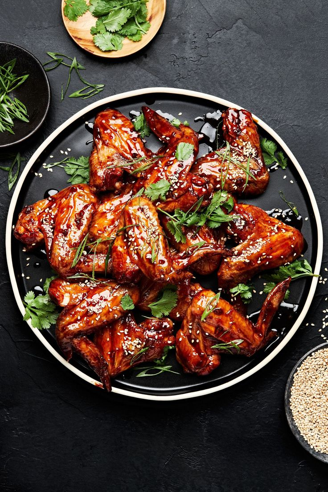
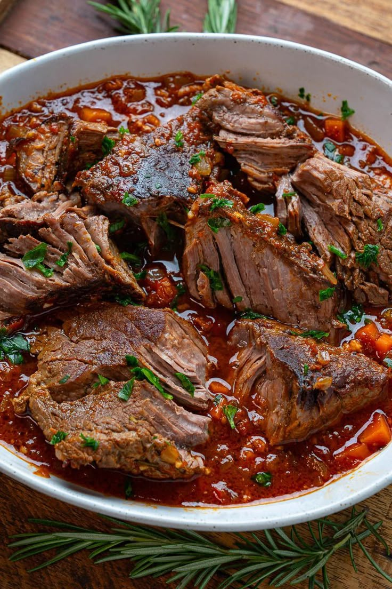
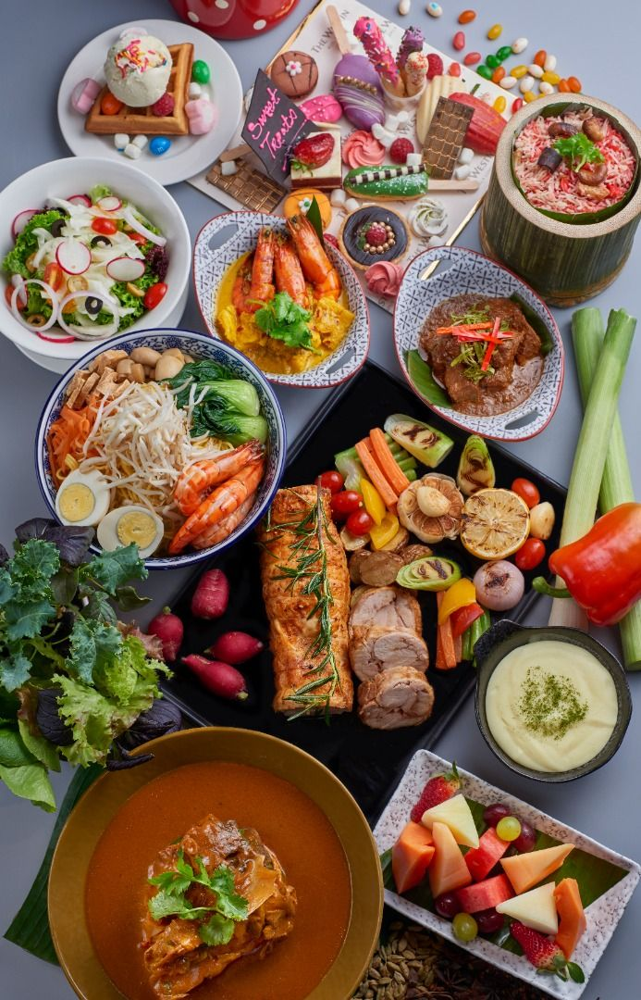
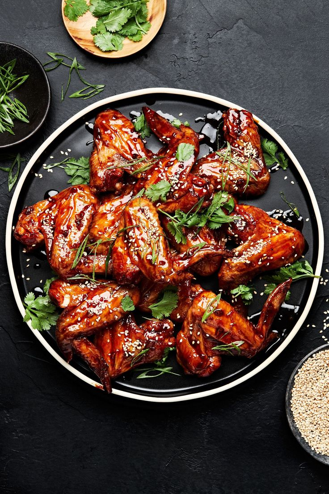
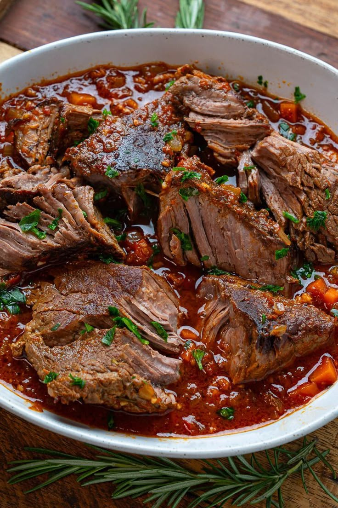
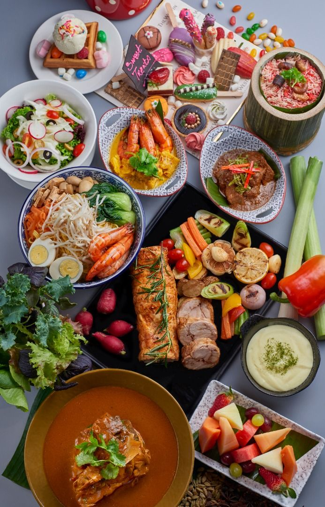
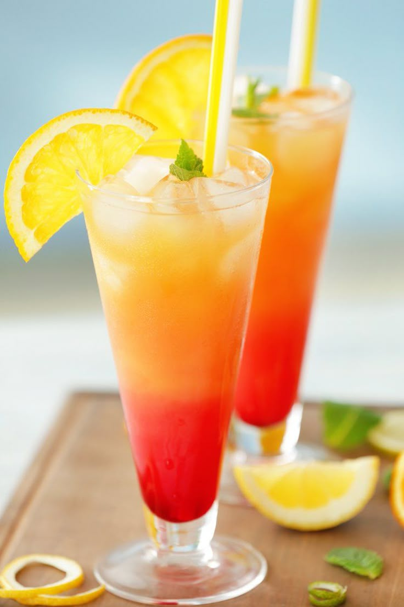
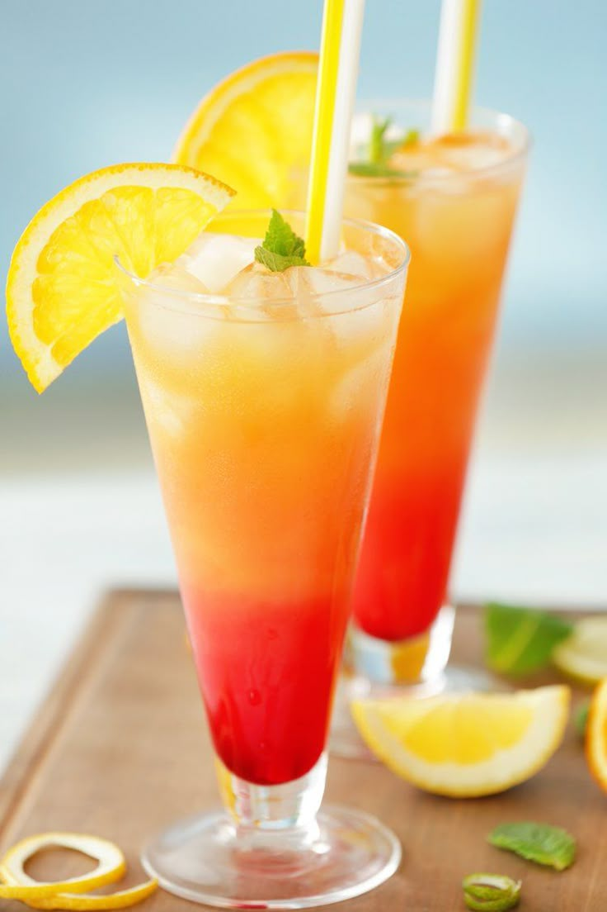

 

Are you the kind of person who loves making orders online? Well we have your interests at heart since you can now make your order and it will be delivered right at your door step. Charges will apply depending on the distance but free delivery will be granted once your Bamburi Tilapia credit points has amassed to the value of your delivery fee
Become a regular loyal customer and stand a chance to unlock free meals,
deliveries and many more offers... always check your customer account to
confirm the offers available for you.
The more you eat the more you stand a chance to unlock special
offers and also adding your Bamburi Tilapia Credit points which will enable yu to get some of our services for free
Opening Hours
Monday – Thursday:
9:00 am – 10:00 pm
Friday – Saturday:
9:00 am – 11:30 pm
Sunday:
12:00 pm – 10:00 pm
What Our Customers Are Saying
Check out our most recent reviews!
Customer Reviews
Excellent Meals specifically the Fish! I ordered delivery, a large wetfry tilapia, maize meal, greens, pizza and a small pepperoni. Cheese is well proportioned and snappy, crust is crispy and well cooked without being burnt. Toppings were also excellent. The level of the wetfry was awesome and great! Would highly recommend.
We love this place! You can’t beat their Wetfry Tilapia Fish and the Domenica salad with their home-made Italian dressing. I just wish Dave the manager would give me the recipe….but he won’t ! LOL They treat us like kings and now we all must give them as much to-go business to keep them up and running.
I have been eating at Bamburi Tilapia for over 20 years it’s definitely my favorite Restaurant in town the only thing that they could do to make it better would be bring back the grilled chicken pasta salad. You took a piece of my heart when you took that off of the menu or at least give me the recipe for the Cayenne sauce that you put on the pasta lol. The staff is always friendly here and pretty basic time for delivery. I will always recommend Bamburi Tilapia Restaurant!
Pizza simply can’t get any better! My service from Adam was great, just like the food! The Wetfry Tilapia was out in a timely manner but honestly, I’d wait hours to taste that flavor and very Soft!